Hi, I'm Laila.
I'm a UX & Product Designer drawn to complex problems and the people behind them. Growing up, I was always curious about how people think, communicate, and experience the world around them. That curiosity eventually led me to study Cognitive Science & Psychology at Case Western Reserve University, where I explored accessibility, human behavior, and the role thoughtful technology can play in improving everyday life.
Today, I'm designing enterprise AI products at Intellect Design, creating experiences that make powerful technology feel intuitive and approachable. Whether I'm designing for financial institutions or rethinking communication tools, I'm most excited by the challenge of turning complexity into clarity.
Outside of design, I'm usually exploring New York with my camera, trying a new matcha spot, crocheting, or hunting for my next favorite pair of sneakers. Those little hobbies remind me to stay curious, notice the details, and appreciate good craftsmanship—qualities I bring into every project.
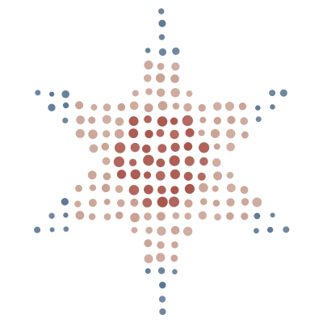
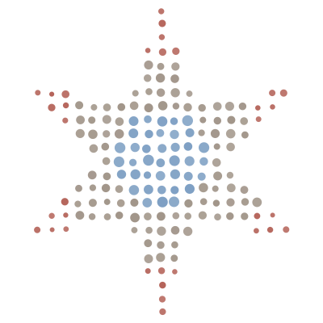
a little note on the star›
“Laila” comes from the Arabic word for night. Growing up, my mom would tell me it meant I was a night star, and stars slowly became my thing — scribbled across notebooks, worked into signatures, and doodled anywhere I could fit one.
So when I needed a mark that felt like me, a shooting star felt inevitable. Its colors borrow from another visual language I love: the warm terracottas, dusty blues, creams, and deep tones of Moroccan tilework.
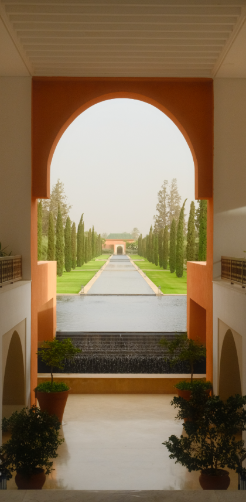
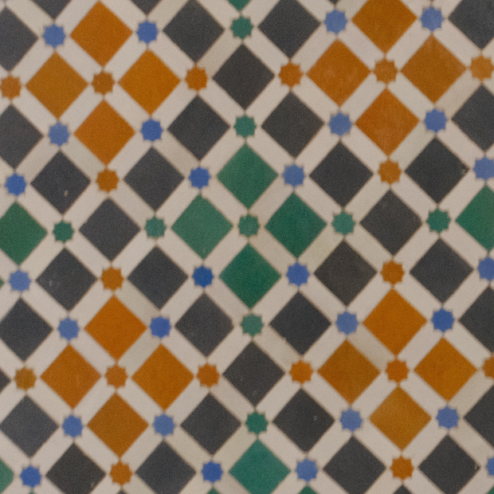
Snapshots I love
Mostly street corners, friends, and wherever I happen to be standing.

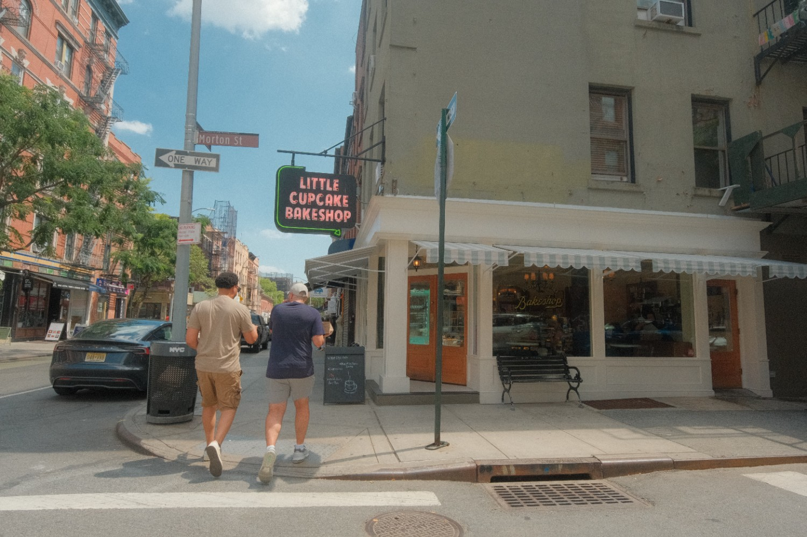
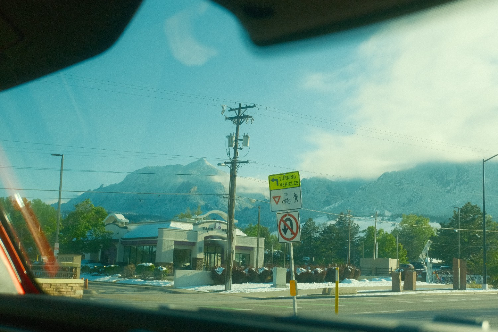

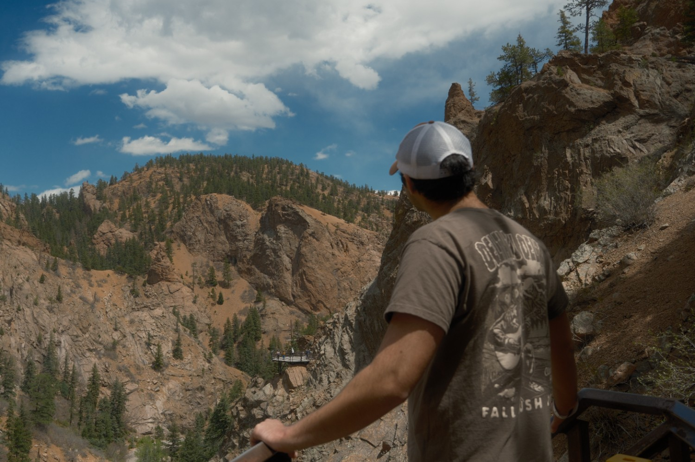
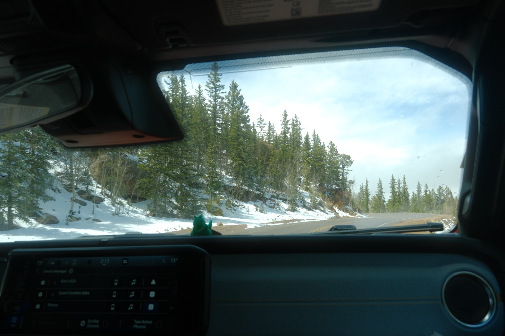

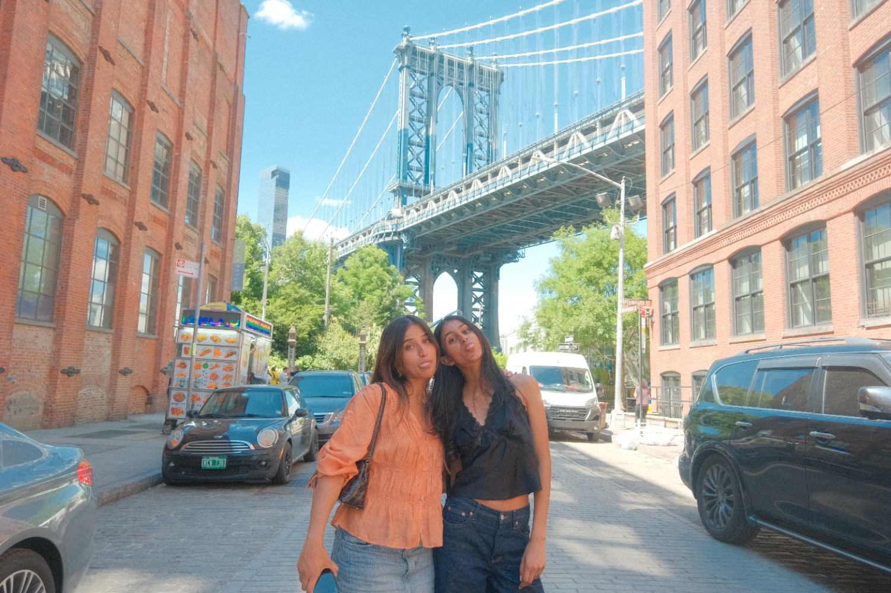

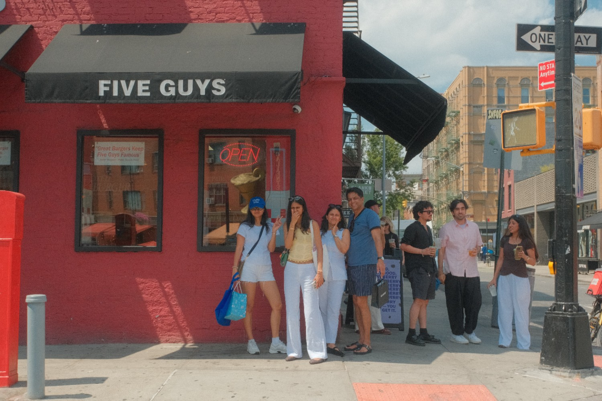
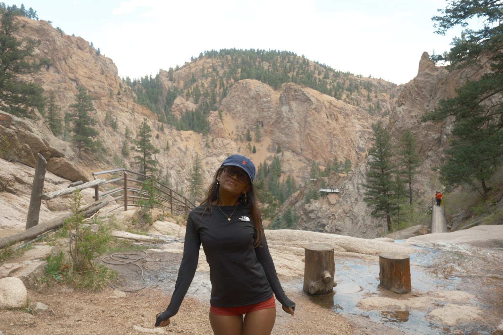


Before you go…
leave a little star behind ✦
Pick a star. Find a spot. Add yours to the sky.
Thanks for stopping by.
Always happy to talk design, research, or a new idea.